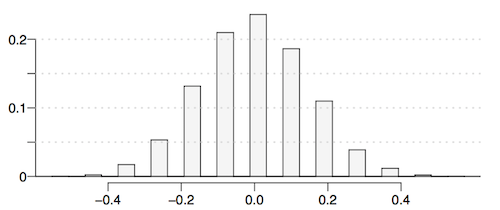
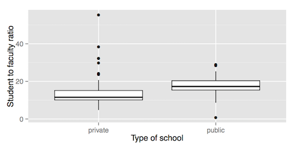
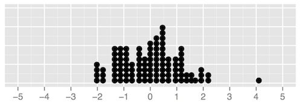
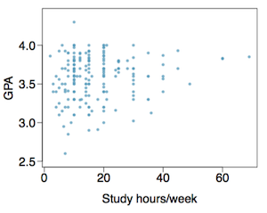
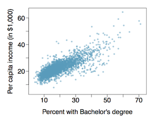

Due: Monday, August 1, 9:30am
Submission: Submit three files on Sakai:
Complete Customizing your data visualization and submit your R Markdown (Rmd) and HTML files.
Question 1. A “social experiment” conducted by a TV program that questioned what people do when they see a very obviously bruised woman getting picked on by her boyfriend. On two different occasions at the same restaurant, the same couple was depicted. In one scenario the woman was dressed “provocatively” and in the other scenario the woman was dressed “conservatively”. The table below shows how many restaurant diners were present under each scenario, and whether or not they intervened. For the purposes of this exercise, you may assume that each observed person at the restaurant behaved independently, though we would want to evaluate this assumption more rigorously if we were reporting these results.
| Provocative | Conservative | Total | |
|---|---|---|---|
| Intervene | 5 | 15 | 20 |
| Don’t intervene | 15 | 10 | 25 |
| Total | 20 | 25 | 45 |
A simulation was conducted to test if people react differently under the two scenarios. 10,000 differences differences between the proportion of diners who intervened between the provocative and conservatively dressed scenarios were simulated, and a relative frequency histogram of these differences is plotted below.

(a) What are the hypotheses?
(b) Calculate the observed difference between the rates of intervention under the provocative and conservative scenarios.
(c) Estimate the p-value using the figure above and determine the conclusion of the hypothesis test.
Question 2. Student-to-faculty ratio data are collected from random samples of 85 private and 57 public four-year colleges. The distributions of these ratios are shown below.

Also shown below are relevant summary statistics:
| Type | Mean | SD | n |
|---|---|---|---|
| Private | 13.84 | 7.28 | 85 |
| Public | 17.60 | 4.57 | 57 |
(a) We would like to test if there is a difference between the average student-to-faculty ratio between public and private four-year colleges using a randomization test. What are the hypotheses?
(b) Fill in the blanks below for the appropriate set up for a simulation for this test.
We write the student-to-faculty ratio of each public and private college in this sample on a total of [blank_1] index cards. Then, we shuffle these cards and split them into two groups: one group of size [blank_2] representing public colleges, and another group of size [blank_3] representing private colleges. We calculate the difference between the average student-to-faculty ratios in the public and private colleges and record this value. We repeat this many times to build a randomization distribution, which should be centered at [blank_4].
(c) Since we are interested in any difference between the average student-to-faculty ratios, we calculate the p-value as the probability of observed or more extreme outcome on either end of the randomization distribution. Calculate this p-value based on the randomization distribution provided below. Note that 100 simulations were used.

Question 3. A survey was conducted on 193 Duke University undergraduates who took an introductory statistics course in 2012. Among many other questions, this survey asked them about their GPA, which can range between 0 and 4 points, and the number of hours they spent studying per week. The scatterplot below displays the relationship between these two variables.

(a) What is the explanatory variable and what is the response variable?
(b) Describe the relationship between the two variables. Make sure to discuss unusual observations, if any.
(c) Is this an experiment or an observational study?
(d) Can we conclude that studying longer hours leads to higher GPAs?
Question 4. The scatterplot below shows the relationship between per capita income (in thousands of dollars) and percent of population with a bachelor’s degree in 3,143 counties in the US in 2010.

(a) What are the explanatory and response 60 variables?
(b) Describe the relationship between the two variables. Make sure to discuss unusual observations, if any.
(c) Can we conclude that having a bachelor’s degree increases one’s income?
Question 5. A study published in the Journal of Personal- ity and Social Psychology asked a group of 200 randomly sampled men and women to evaluate how they felt about various subjects, such as camping, health care, architecture, taxidermy, crossword puzzles, and Japan in order to measure their dispositional attitude towards mostly independent stimuli. Then, they presented the participants with information about a new product: a microwave oven. This microwave oven does not exist, but the participants didn’t know this, and were given three positive and three negative fake reviews. People who reacted positively to the subjects on the dispositional attitude measurement also tended to react positively to the microwave oven, and those who reacted negatively also tended to react negatively to it. Researchers concluded that “some people tend to like things, whereas others tend to dislike things, and a more thorough understanding of this tendency will lead to a more thorough understanding of the psychology of attitudes.”
(a) What are the cases?
(b) What is (are) the response variable(s) in this study?
(c) What is (are) the explanatory variable(s) in this study?
(d) Does the study employ random sampling?
(e) Is this an observational study or an experiment? Explain your reasoning.
(f) Can we establish a causal link between the explanatory and response variables?
(g) Can the results of the study be generalized to the population at large?